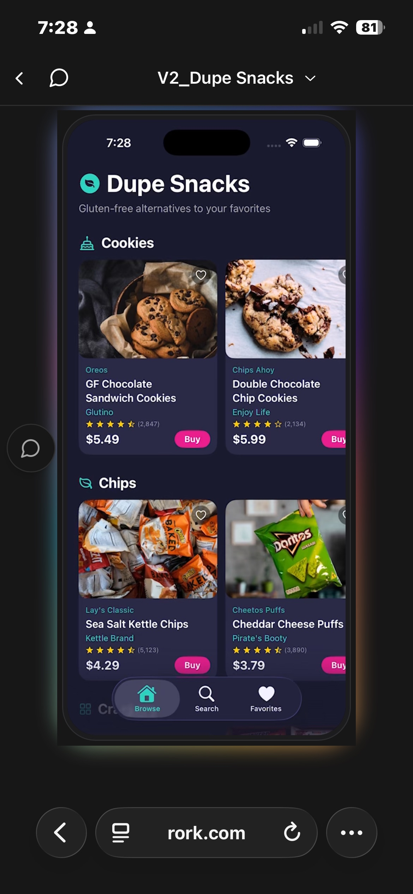
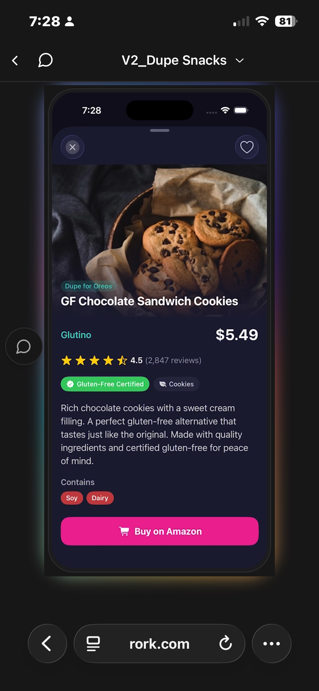
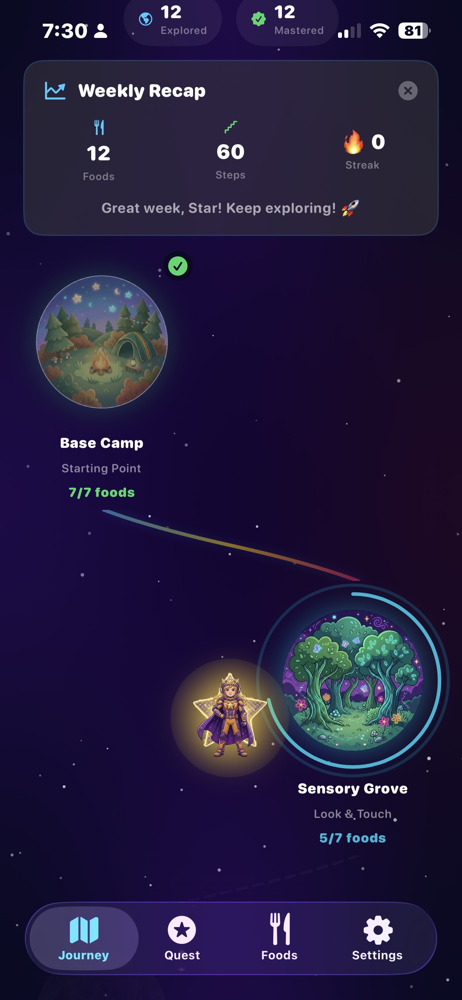
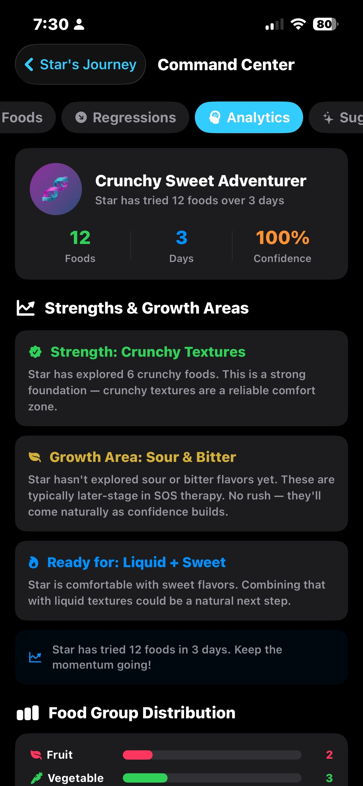
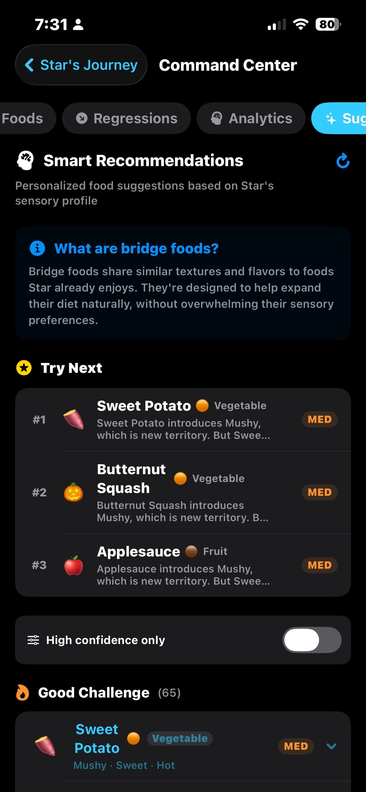
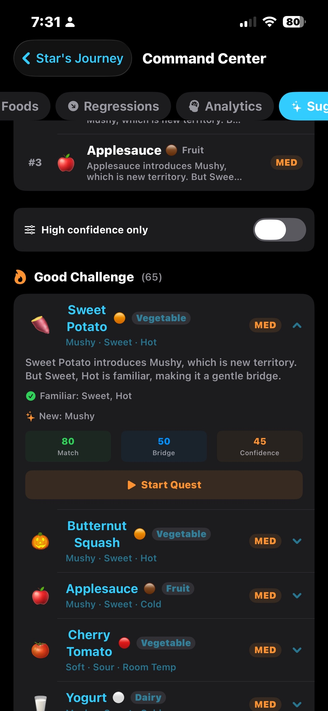

While experimenting with Rork recently, I realized something surprising.
About a year ago I spoke with a developer about building a small app idea. The estimate was $80,000 and several months of development.
Using Rork, I'll likely launch the MVP in a few days.
The story behind that — and what it reveals about the future of Rork — is below.
I'm a brand and marketing strategist who has spent the last 15 years helping companies build brand systems and launch products.
Experience includes: Nike, adidas, and CreateAI / TuSimple, where I translated highly technical autonomous vehicle and AI technology into narratives for regulators, fleet operators, and customers.
Recently I began experimenting with AI product tools. That's when I discovered Rork, and it immediately stood out.
One of the apps I'm currently building is a passion project for my family.
My seven-year-old daughter has celiac disease.
There are several apps that help people navigate gluten-free eating, but most focus on restaurants or crowdsourced information. None solve the simplest problem: Where can I quickly buy food that I know is 100% gluten-free?
The app I'm building is intentionally simple. You open it, browse snacks and food items, and anything listed can be purchased online with complete confidence that it's gluten-free.


About a year ago I asked a developer what it would take to build something like this.
Their estimate: $80,000 and several months just to launch an MVP.
With Rork, I'm building it myself. I'll likely have a working MVP in days, not months.
What's interesting is that I have no background in coding. My entire career has been in brand and marketing — obsessing over consumer journeys, messaging clarity, information architecture, conversion flow, and simplifying complex experiences.
Those instincts translate surprisingly well to building apps.
I experimented with a few LLM tools over the past year with limited success. But the moment I started using Rork, it clicked.
For the first time, I felt like I could actually build the product myself.
This is what "Rorked" means. No developer. No code. No months of waiting. Just an idea, a problem to solve, and the ability to build it in days.
The insight: Rork isn't just making developers faster. It's creating an entirely new class of builders.
While building Dupe Snacks, I started thinking about another problem: How do you help kids expand their palate when they have selective eating patterns?
Many kids with sensory sensitivities get stuck in a loop — they eat the same 5-10 foods and feel overwhelmed trying anything new.
The solution: A gamified app called Flavor Galaxy that turns eating new foods into an adventure. Kids explore different flavor zones, unlock achievements, and get smart recommendations for their next foods based on their sensory profile.
The key innovation: "Bridge foods." Instead of suggesting random new foods, the app recommends foods that share textures or flavors kids already enjoy, but gently introduce new elements. It's backed by food science, sensory psychology, and data — all wrapped in fun game mechanics.


Flavor Galaxy includes:


This app is substantially more complex than Dupe Snacks. It requires personalized AI recommendations, multi-player gamification logic, detailed progress tracking, parent-child account systems, analytics dashboards, and behavioral incentive mechanics.
Yet I'm building it the same way — with Rork, no coding background, moving quickly.
The meta-insight: This isn't just about speed. It's about complexity. I can build sophisticated, multi-layered products that would traditionally require a team of developers. Rork makes that possible solo.
Two apps. Two different problems. Two different complexity levels. All Rorked.
Every generational product eventually becomes a verb.
Examples:
The companies that dominate categories don't just sell tools. They create language.
Why does Rork have the potential to become a verb?
The behavior shift: "I Rorked it." / "That's so Rorked."
Instead of hiring a developer, learning to code, or opening Xcode, people simply say: "I built it myself. I Rorked it."
When friends see an amazing app, they'll ask: "Wait, who built this?" The answer? "I Rorked it."
It's about creation. It's about pride. It's about saying: "I built this. I Rorked it."
Core positioning: Rork is the fastest way to turn an idea into a working app.
Position it not as a developer tool, but as a creation platform.
The "Rorked" Callout: Apps and projects built with Rork get a badge: "This was Rorked." It signals quality, speed, and solo-builder credibility.
The brand story should inspire people to think: "Wait, I could build that myself — I could Rork it."
Show real people building real apps. Example: "I Rorked an app for my daughter in 3 days." Turn these into TikToks, X threads, YouTube shorts, and case studies. The tagline: "How I Rorked [App Name]."
When someone launches an app, the response becomes: "Oh, you Rorked that?" It's a compliment. It signals: solo-built, fast, ambitious, and powered by Rork. Make it aspirational.
The fastest-growing tech brands often have founders telling the story of the future. Rork's founder can tell the story of the future of software creation.
Example — "Build an App in 30 Minutes Challenge." Create a competitive, community-driven movement.
Give builders a shared identity: "Rorkers." When someone Rorked an app, they're part of an exclusive club of makers.
Every app built with Rork displays a badge: "Rorked" — a visual marker that says "this was built fast, solo, and with Rork." It becomes a status symbol.
Millions of people will build software who never wrote code before.
Rork could become the default tool for that generation.
The question isn't whether this happens. It's whether Rork owns the narrative.
I'd love to work with Rork on:
Goal: Make "Rorked" a cultural marker. When someone says "I built this amazing app myself," people's first thought is: "Oh, you Rorked it."
It happens when technology and narrative align.
Rork already feels like one of those rare products where the technology is ahead of the story.
The opportunity now is to build the story. If any of this resonates, I'd love to talk.
PS: I built this landing page itself using Rork. It's a live example of an app being Rorked.
The screenshots? That's two real apps I'm building: Dupe Snacks (a simple e-commerce app) and Flavor Galaxy (a complex gamified platform). Both Rorked in days, not months. Both solving real problems for real families.
If you want to see what's possible when the barrier to building is removed, I'd love to talk.
Visit this campaign at: robkremers.com/rorked